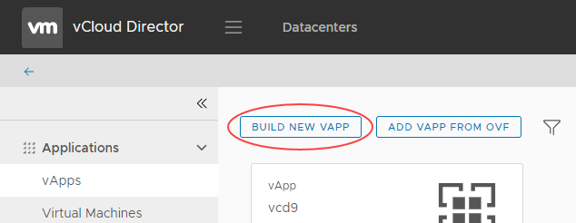
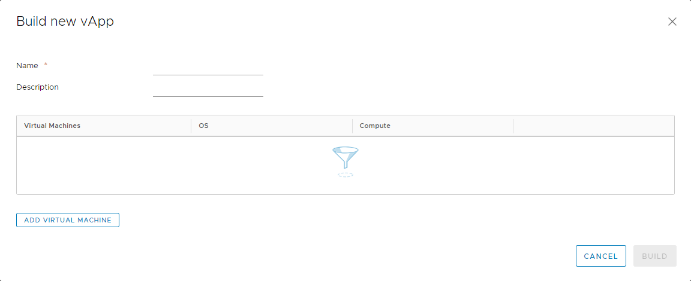

How to create a vApp
Overview
vCloud Director uses vApps to make virtual machine (VM) creation and management easy and flexible. vApps are essentially containers for VMs and can be used in many ways. One of the most common uses of a vApp is to group similar VMs together for easy management. Or you can put VMs that form a multi-tier application into the same vApp for greater control. Up to 128 vApps can be created within a virtual data centre (VDC) and intelligently networked to create complex architectures that can be managed easily.
In this guide we'll look at how to create a vApp from scratch.
The steps for creating a vApp depend on the version of vCloud Director available in your environment:
Creating a vApp (vCloud Director 8.20)
In vCloud Director, on the Home tab, click the Build New vApp button.

Enter a name for your vApp. This should be a name that will easily identify it if you're building a large environment with multiple vApps. If you have multiple VDCs on the UKCloud platform, you can decide later which one the new vApp sits in. You can also choose how long the vApp can exist for, which is useful for test & dev projects.

When you're happy with these settings, click Next.
You can now populate the vApp with VMs. There are several ways to create a VM:
From an existing template. The template can be in your own organisation's catalogue or in UKClouds's public catalogue (see How to create a VM from a template).
Catalogue creation is covered in How to create a catalog.
From scratch, without using a template (see How to create a virtual machine from scratch).
When you've finished creating your vApp, click Finish.
When your vApp has finished deploying, on the Home page, right-click the newly created vApp and click Start to power it on.
Creating a vApp (vCloud Director 9.1)
In the vCloud Director Virtual Datacenters dashboard, select the VDC in which you want to create the vApp.
In the left navigation panel, select vApps to view a list of vApps within the VDC.

Click Build New vApp.

In the Build new vApp dialog box, enter a Name and Description for your vApp. The name should be something that will easily identify it if you're building a large environment with multiple vApps.

You can now click Add Virtual Machine to populate the vApp with VMs. There are several ways to create a VM:
From an existing template (see How to create a VM from a template).
Catalog creation is covered in How to create a catalog.
From scratch, without using a template (see How to create a virtual machine from scratch).
When you've finished creating your vApp, click Build.
When your vApp has finished deploying, in the card for the vApp, click Power then Power On to power it on.
Feedback
If you find an issue with this article, click Improve this Doc to suggest a change. If you have an idea for how we could improve any of our services, visit UKCloud Ideas. Alternatively, you can contact us at products@ukcloud.com.